Как работать с Microsoft Power BI
Чтобы создавать понятные отчеты и обновлять их в режиме реального времени современному бизнесу необходим мощный сервис для обработки информации. В комментариях к моим предыдущим публикациям в блоге читатели неоднократно просили написать мануал по работе с Microsoft Power BI. В этой статье я рассказал, как начать работу с данной платформой.
Кратко о возможностях Microsoft Power BI
Power BI — достаточно мощная и при этом бесплатная BI платформа. Microsoft вкладывает много средств в развитие этого продукта, в связи с чем часто выходят обновления, расширяющие ее возможности. Вы можете использовать такие версии программы:
- Power BI Desktop предназначен для разработки модели данных и отчетов;
- Power BI Service — онлайн-аналог, который специализируется на мониторинге и анализе готовых отчетов, поэтому возможности конструирования и работы с данными там очень ограничены.
Как правило, декстопная версия используется в качестве конструктора, после чего разработанный файл публикуется в Power BI Service. Для дальнейшей работы скачайте Power BI Desktop;по этой ссылке.
Для пользователей Microsoft Windows 10 есть отдельная версия Power BI Desktop, которую вы можете найти, перейдя по этой ссылке.
Откуда можно загружать данные?
Power BI имеет множество встроенных коннекторов к различным сервисам и базам данных, с помощь которых вы в считанные минуты можете загрузить в программу нужный набор данных из различных источников, связать их между собой и построить консолидированные отчеты и диаграммы. На момент написания статьи все доступные коннекторы распределены на четыре группы:
1. Группа «Файл»:
- Excel;
- CSV;
- XML;
- Текст;
- JSON;
- Папка.
2. Группа «База данных»:
- SQL Server;
- Access;
- SQL Server Analysis Service;
- Oracle;
- IBM DB2;
- MySQL;
- PostgreSQL;
- Sybase;
- Teradata;
- SAP HANA.
3. Группа «Azure»:
- База данных Microsoft Azure SQL;
- Microsoft Azure Marketplace;
- Microsoft Azure HDInsight;
- Хранилище BLOB-объектов;
- Табличное хранилище Microsoft Azure;
- Azure HDInsight Spark;
- Microsoft Azure DocumentDB;
- Хранилище озера данных Microsoft Azure.
4. Группа «Другое»:
- Интернет;
- Список SharePoint;
- Канал OData;
- Файл Hadoop;
- Active Directory;
- Microsoft ExChage;
- Dynamics CRM online;
- Facebook;
- Google Analytics;
- Объекты Salesfore;
- Отчеты Salesforce;
- ODBC;
- R-скрипт;
- appFigures;
- GitHub;
- MailChimp;
- Marketo;
- QuickBook Online;
- Smartsheets;
- SQL Sentry;
- Stripe;
- SweetIQ;
- Twilio;
- Zendesk;
- Spark;
- Пустой запрос.
Как видите, в Power BI можно импортировать данные из наиболее известных баз данных и сервисов, используя различные форматы файлов. После загрузки информации из доступных источников в Power BI, перед вами открываются большие возможности по очистке и преобразованию данных, в связи с тем, что в платформе присутствует достаточно мощный ETL функционал. Загружаемые таблицы можно редактировать, а на основе их столбцов создавать расчетные столбцы и меры — таким образом вы можете преобразовать массивы информации в наборы данных со структурой, необходимой для построения визуализации.
Какие визуализации можно построить?
Сформировав набор данных, загруженных из различных источников, вам станут доступны множество встроенных элементов визуализации:
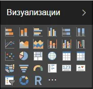
- линейчатая диаграмма с накопление;
- гистограмма с накоплением;
- линейчатая диаграмма с группировкой;
- гистограмма с группировкой;
- нормированная линейчатая диаграмма;
- нормированная гистограмма;
- график;
- диаграмма с областями;
- диаграмма с областями с накоплением;
- линейная гистограмма и гистограмма с накоплением;
- линейная гистограмма и гистограмма с группировкой;
- каскадная диаграмма;
- точечная диаграмма;
- круговая диаграмма;
- диаграмма дерева;
- карта;
- таблица;
- матрица;
- заполненная карта;
- воронка;
- датчик;
- многострочная карточка;
- карточка;
- ключевой показатель эффективности;
- срез;
- кольцевой график;
- визуальный элемент r-script (на данный момент включается в параметрах программы).
Все элементы имеют достаточно широкий спектр настроек, направленных на изменение нужных параметров: цвет, фон, название, границы и так далее. Если вам будет недостаточно стандартного набора, можно загрузить пользовательские визуальные элементы.
Как загрузить данные в Power BI Desktop?
1. Установите связь с Google Analytics
1.1. Приступим непосредственно к загрузке информации из представления Google Analytics. На вкладке «Главная» в группе «Внешние данные» жмем на кнопку «Получить данные»
.
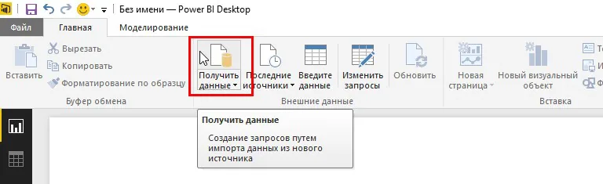
После чего в диалоговом окне «Получить данные» в группе «Другое» выбираем сервис «Google Analytics» и жмем «Подключить».
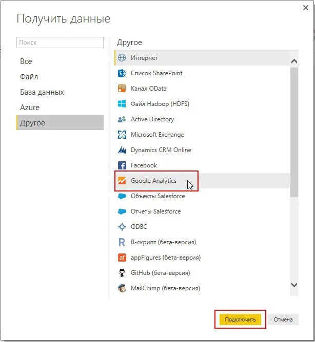
1.2. Далее Power BI запросит вход в аккаунт Google.
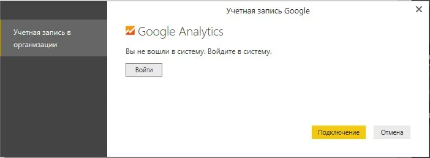
1.3. Последний шаг — предоставить разрешение на просмотр данных в нужном представлении Google Analytics.
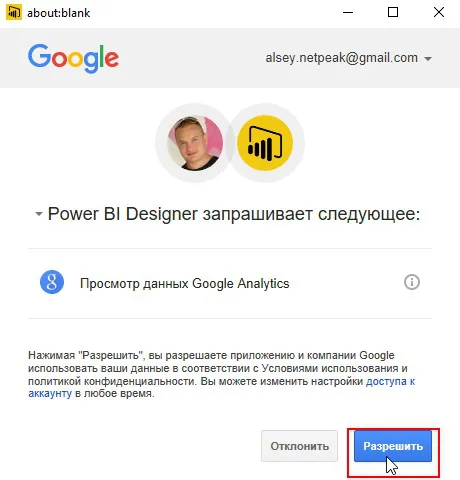
1.4. После клика по кнопке «Разрешить» мы автоматически возвращаемся в окно «Учетная запись Google», где будет оповещение, что вы вошли в систему. Жмем на кнопку «Подключение».
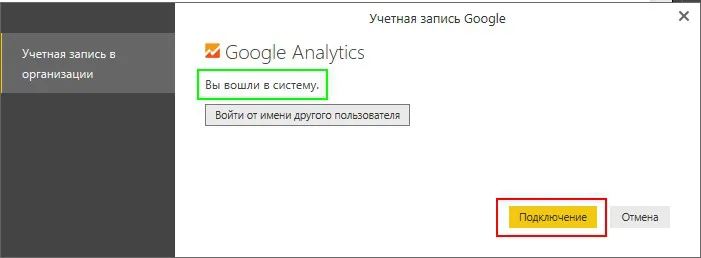
В открывшимся окне «Навигатор» вы увидите список всех доступных аккаунтов, ресурсов и представлений Google Analytics.
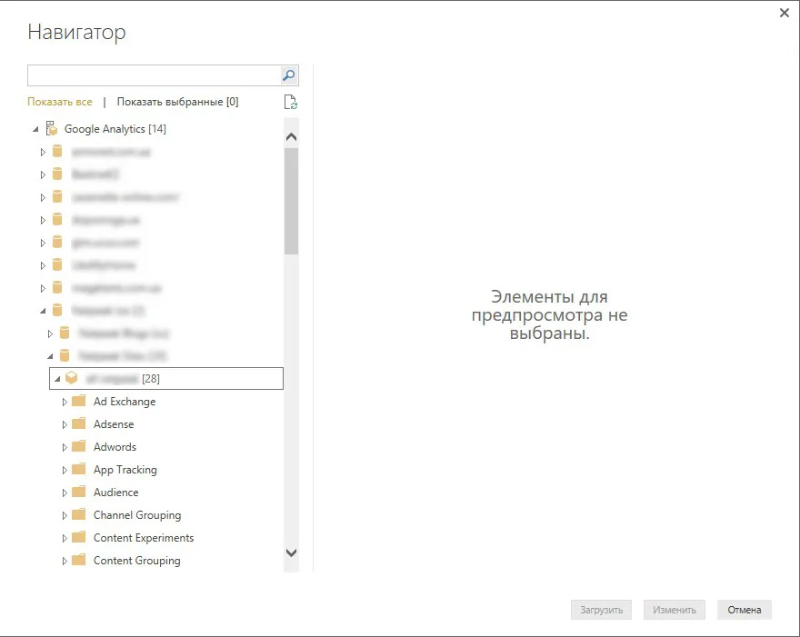
В каждом представлении присутствует одинаковый набор параметров и показателей, распределенных на 28 групп:
- Ad Exchange — информация об эффективности рекламы в Ad Exchange;
- AdSense — информация об эффективности показов рекламы AdSense;
- AdWords — информация об эффективности рекламных кампаний в AdWords;
- App traking — информация о взаимодействии с мобильным приложением;
- Audience — демографическая информация о посетителях сайта;
- Channel grouping — группы каналов трафика;
- Content Experiments — информация о проводимых экспериментах;
- Contetn Grouping — классификация контента сайта по группам;
- Custom variables or colunms — пользовательские параметры и показатели;
- DoubleClick Campaign Manager — информация о эффективности рекламы в DoubleClick;
- Ecommerce — данные электронной торговли;
- Event tracking — информация о событиях;
- Exceptions — исключения;
- Geo network — геоданные посетителей;
- Goal conversion — данные о достижении целей;
- Internal Search — информация об использовании поиска на сайте;
- Page Tracking — информация о страницах, которые просмотрели пользователи;
- Platform or device — операционные системы и устройства пользователей;
- Related product — связанные сервисы;
- Session — информация о сеансах;
- Site speed — скорость загрузки страниц;
- Social activities — показатели активности в социальных сетях;
- Social interaction — показатели взаимодействия трафика из социальных сетей;
- System — информация о системных показателях посетителей;
- Time — информация о времени совершения событий;
- Traffic source — информация об источниках трафика;
- User — информация о пользователях;
- User timings — длительность сеанса.
В качестве примера давайте выберем следующие параметры: Channel grouping —> Default channel grouping; User —> User Type; Time —> Month of year. В качестве показателей возьмем: Session —> Sessions; Session —> Bounces; Session —> Session duration. Хочу заметить, что в Power BI, как и при любом API запросе в Google Analytics, существует ограничение на максимальное количество запрашиваемых параметров (не более семи) и показателей (не более десяти). 1.5. Для того, чтобы загрузить выбранные данные в модель данных Power BI, жмем кнопку «Загрузить», которая располагается в нижнем правом углу окна «Навигатор».
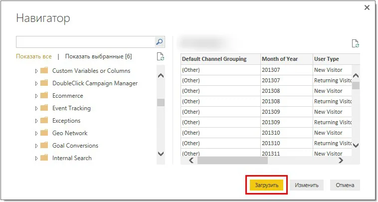
Теперь загруженный набор данных отображается в области полей, и мы можем строить на основе этой информации любой доступный визуальный элемент.
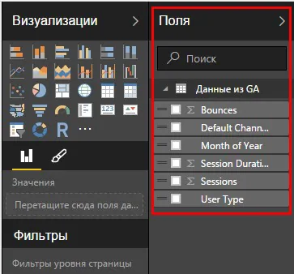
2. Как загрузить данные из MySQL?
Чтобы показать функциональность Power BI, я сгенерировал и загрузил в MySQL данные о продажах. Следуя описанным ниже инструкциям, можно подключать любые доступные базы данных и после соединять всю загруженную информацию в одну таблицу или график. 2.1. Для загрузки данных о продажах из MySQL, как в описанном примере, необходимо воспользоваться командой «Получить данные», которая находится на вкладке «Главная».
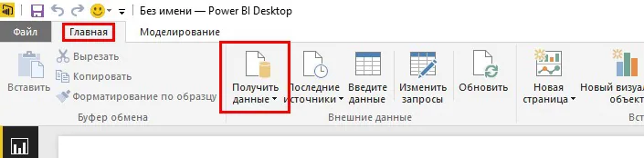
2.2. В диалоговом окне «Получить данные» в группе «База данных» выбираем пункт «База данных MySQL».
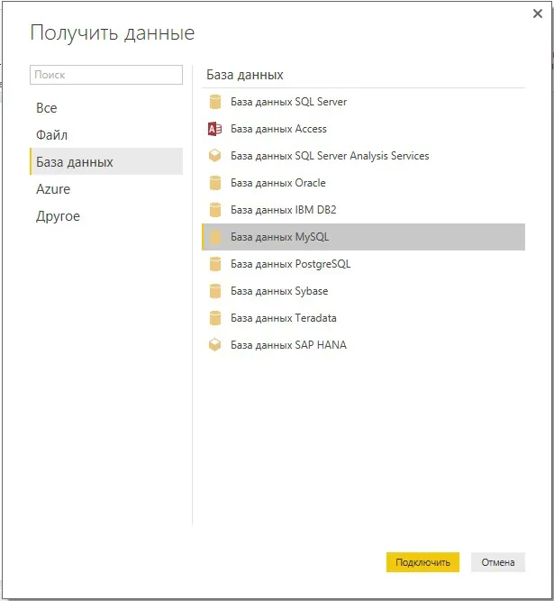
2.3. После клика по кнопке «Подключить» в окне «База данных MySQL» вводим IP сервера, имя базы данных и текст SQL запроса. Если вы не знакомы с SQL и хотите просто выбрать некоторые таблицы из базы данных целиком, то вводить SQL запрос не следует, на следующем шаге у вас будет возможность выбора таблицы. Поскольку я загрузил тестовые данные с локального ПК, то в поле «Сервер» вместо IP я укажу «localhost».
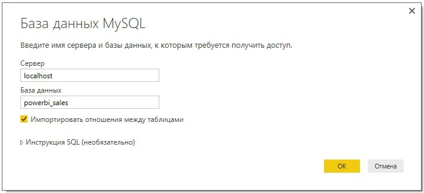
2.4. Далее вводим учетные данные для доступа в MySQL и жмем кнопку «Подключение».
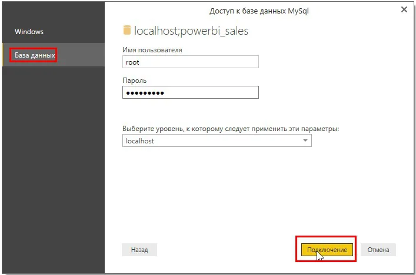
2.5. На этом этапе подключение к MySQL серверу установлено. В случае, если вы ранее прописали SQL скрипт, то результат его работы будет загружен в модель данных. Поскольку мы не указывали запрос, в левой части диалогового окна «Навигатор» появится список доступных таблиц из указанной ранее базы данных. В моем случае доступна всего одна одна таблица «sales», все остальные — системные, в связи с чем ставим галочку напротив названия таблицы продаж и жмем «Загрузить».
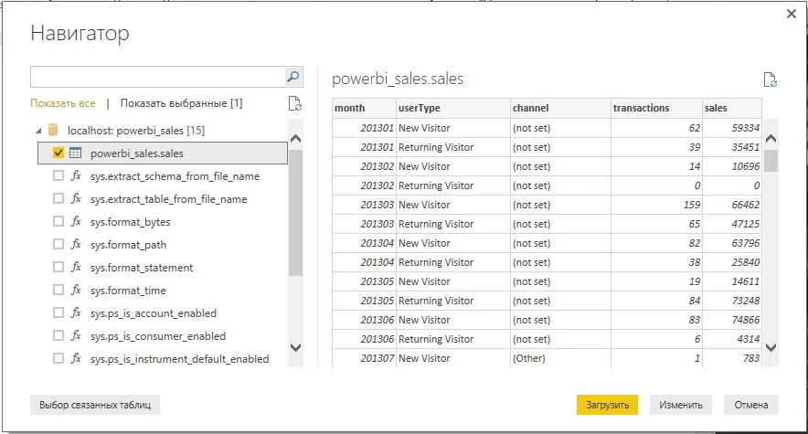
Теперь в модель данных Power BI загружены данные из двух источников: Google Analytics и MySQL.
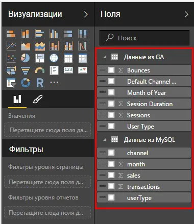
3. Как упорядочить данные?
После того, как все необходимые данные загружены, необходимо привести их к нужному виду. Наиболее удобный способ редактирования данных — перейти в режим «Данные», с помощью одноименной команды, расположенной на левой панели рабочего окна Power BI.
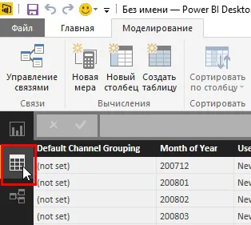
В режиме данных вы можете изменить тип данных, хранящихся в любом столбце, создавать новые столбцы и меры, используя возможности языка формул DAX, заменять значения хранящиеся в столбцах — в общем делать с данными все, что считаете нужным. В нашем случае следует изменить формат вывода поля «Sale» на денежный. В меню «Поля», которое в режиме «Данных» находится в правой части окна, выбираем нужный набор данных (в нашем случае «Данные из MySQL»), после чего кликаем на название столбца «Sales» и меняем формат данных, перейдя на вкладке «Моделирование» в группу «Форматирование».
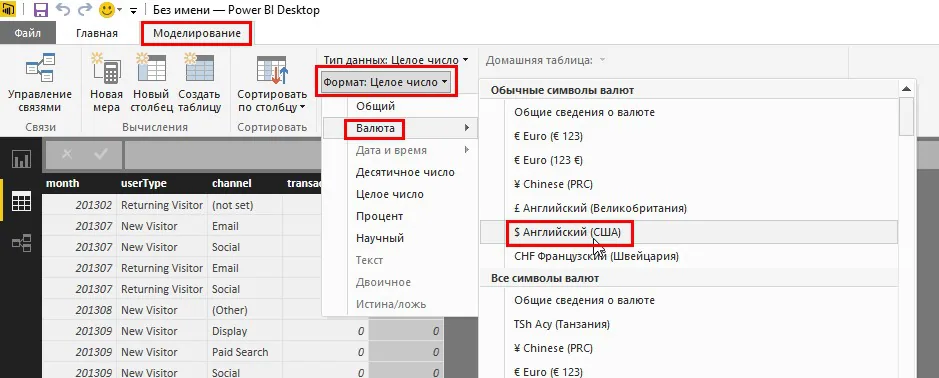
4. Как установить связи между таблицами
Для того, чтобы строить визуализацию на основе данных из двух различных источников необходимо настроить между ними связи. Power BI поддерживает три типа связей:
- многие к одному;
- один к одному;
- один ко многим.
Единственный подходящий для загруженных таблиц тип связи — многие ко многим. Он создается через промежуточные таблицы (справочники) и средствами создания двух связей типа многие к одному и один ко многим. В нашем наборе данных существует три параметра, по которым необходимо настроить связи между таблицами «Default Channel Group», «YearMonth», «UserType». Соответственно необходимо создать три одноименных справочника, которые будут содержать список всех уникальных элементов каждой из перечисленных категорий. В качестве примера мы загрузим список уникальных элементов по каждому полю из CSV файлов.
- channelGroup;
- yearMonth;
- userType.
4.1. Процесс загрузки CSV файлов в Power BI так же прост, как и описанные раннее подключения к Google Analytics и MySQL: жмем кнопку «Получить данные», в группе «Файл» выбираем «CSV» и по очереди загружаем в модель данных три скачанных CSV файла. 4.2. При загрузке таблиц «channelGroup» и «userType» необходимо указать, что первая строка является заголовком столбца. Для этого перейдите в режим редактирования запроса, на вкладке «Преобразование» в выпадающем меню «Таблица» используйте команду «Использовать первую строку в качестве заголовка»:
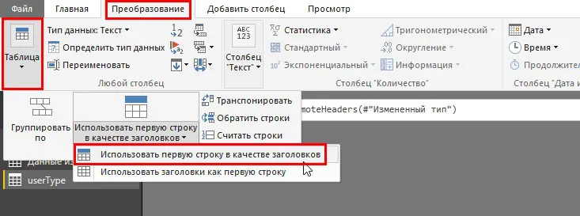
Если на этом этапе вы все сделали правильно, модель данных будет состоять из пяти таблиц. Чтобы в этом убедиться, можно посмотреть в область полей либо перейти в режим визуального интерфейса просмотра модели данных (для этого кликните по иконке с изображением связей между таблицами на левой панели Power BI).
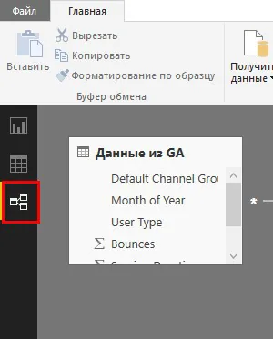
Power BI самостоятельно определил некоторые связи, поэтому модель данных выглядит следующим образом.
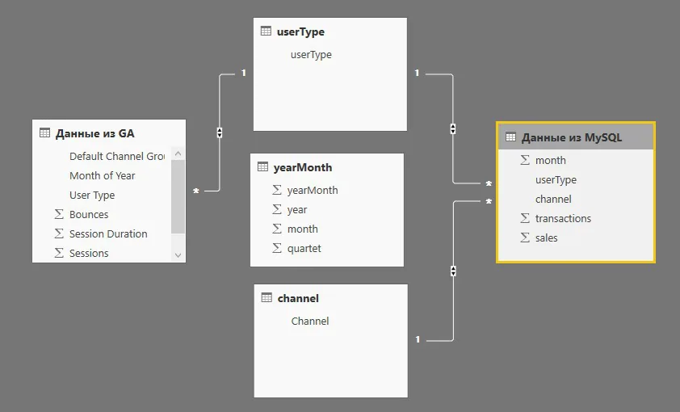
4.3. Для дальнейшего создания всех связей нам необходимо изменить тип текущих связей на однонаправленные, в противном случае связи, которые мы планируем создать, будут неоднозначны и при их определении Power BI выдаст ошибку. Чтобы изменить тип связей необходимо дважды кликнуть по связи левой кнопкой мыши и в диалоговом окне «Изменение связи» поменять направление кроссфильтрации на однонаправленную.
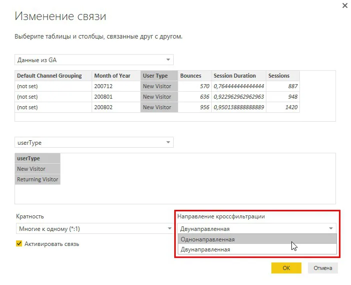
Изменив направление кроссфильтрации связей, созданных автоматически, можно переходить к процессу создания остальных связей. 4.4. В Power BI существует два способа определения связей между таблицами: в визуальном режиме и с помощью диалогового окна «Управление связями». Чтобы создать связь в режиме визуализации модели данных, нужно перетащить с помощью мыши поле из одной таблицы в ту, с которой хотим создать связь. Давайте таким образом активируем связь по полю «Default channel group» в таблице «Данные из GA» с полем «Channel» в таблице «channel».
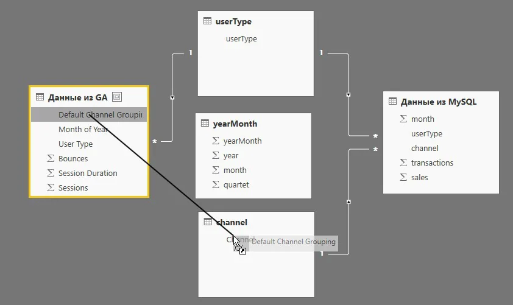
Как в предыдущих примерах, необходимо изменить направление кроссфильтрации на однонаправленную. Теперь модель данных выглядит следующим образом:
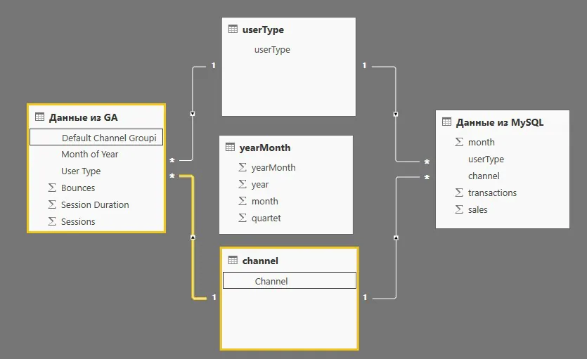
4.5. Оставшиеся связи мы будем создавать с помощью диалогового окна «Управление связями», для этого кликните на кнопку «Управление связями» на вкладке «Главная».
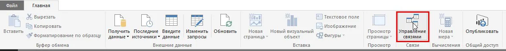
Диалоговое окно «Управление связями» содержит все созданные ранее связи, для создания новых связей следует нажать на кнопку «Создать».
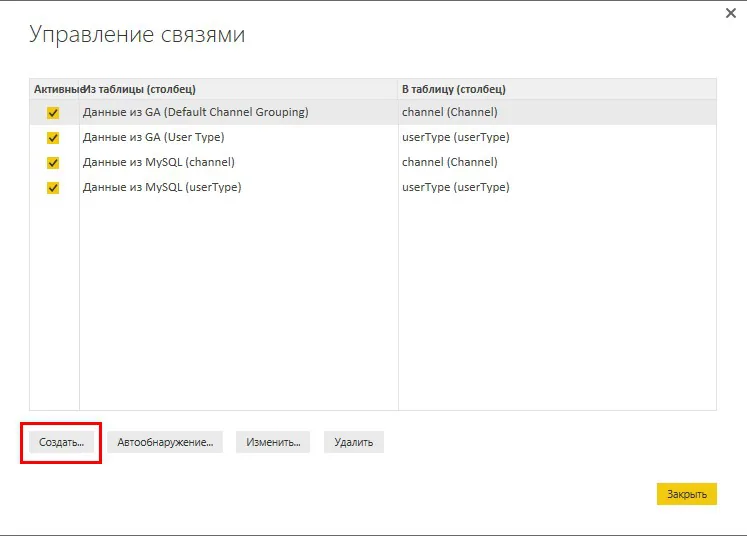
В окне создания связи необходимо указать таблицы и поля, по которым вы планируете настроить связь, а так же указать кратность связи и направление кроссфильтрации. 4.6. Для создания связи между таблицей «данные из GA» и «yearMonth» необходимо в окне создания связи установить следующие параметры.
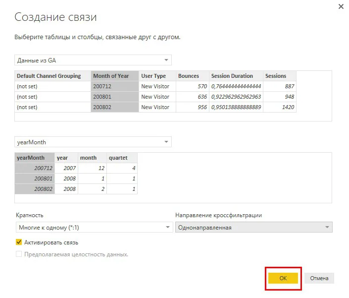
Таким же образом нам надо связать таблицу «данные из MySQL» и «yearMonth».
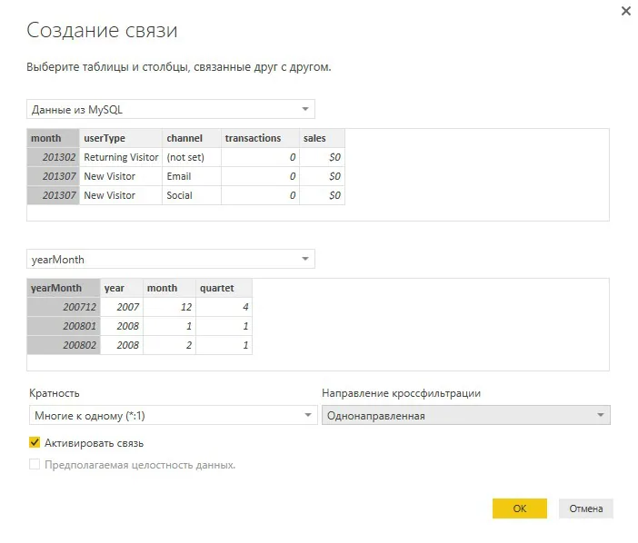
Модель данных теперь выглядит следующим образом.
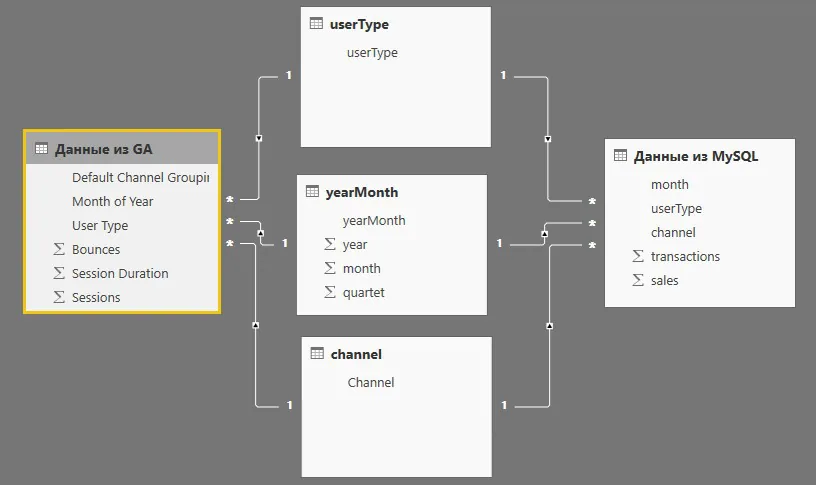
Как видите, таблицы «Данные из GA» и «Данные из MySQL» теперь связаны между собой через справочники и имеют друг к другу кратность связи многие ко многим.
5. Как построить визуализацию?
5.1. Чтобы создать визуализацию, вернемся в режим «Отчет», воспользовавшись одноименной кнопкой в меню, расположенном в левой части окна Power BI.
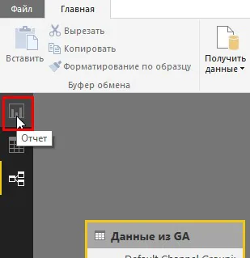
5.2. Далее построим диаграмму, на которой совместим данные из разных источников: из Google Analytics будут отображены данные о количестве сеансов, из MySQL — о количестве продаж. 5.2.1. В качестве элемента визуализации будем использовать вид «Линейная гистограмма и гистограмма с накоплением».
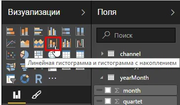
5.2.2. Перетягиваем поле «month» из таблицы «yearMonth» в область «Общая ось».
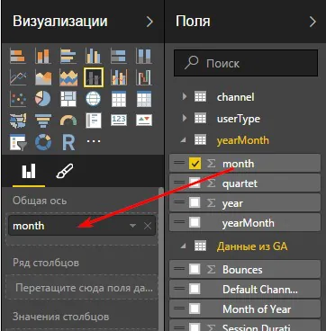
5.2.3 Перетягиваем поле «Session» из таблицы «Данные из GA» в область «Значения столбцов».
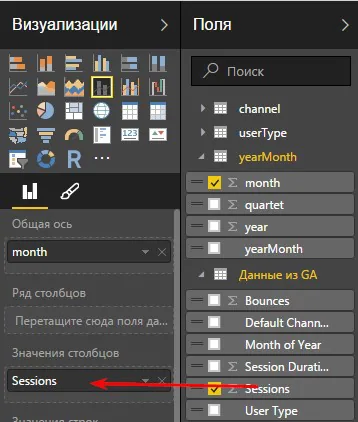
5.2.4. Перетягиваем поле «sales» из таблицы «Данные из MySQL» в область «Значения строк».
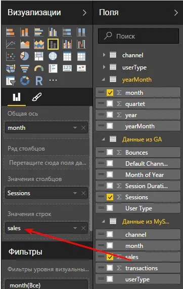
В результате этих манипуляций в области отчетов будет построена диаграмма следующего вида.
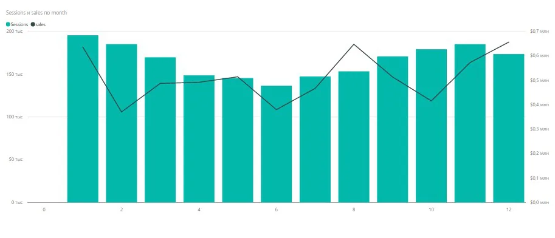
Как видите, диаграмма сочетает в себе информацию о сеансах и продажах из двух разных источников. 5.3. Дополнительно можно воспользоваться опциями форматирования объектов визуализации, кликнув по иконке с кисточкой.
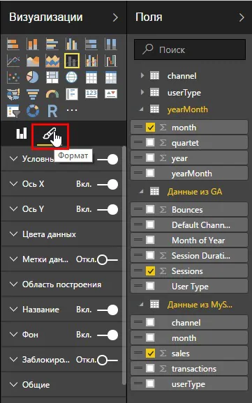
В результате чего вы можете изменять цвета, размер, шрифт, фон и прочие параметры элемента визуализации.
6. Как настроить фильтры данных?
Для более удобной работы с фильтрами данных следует добавить на рабочий лист три среза. 6.1. Перетащите с помощью мыши в пустое место области отчетов следующие поля:
- «userType» из одноименной таблицы;
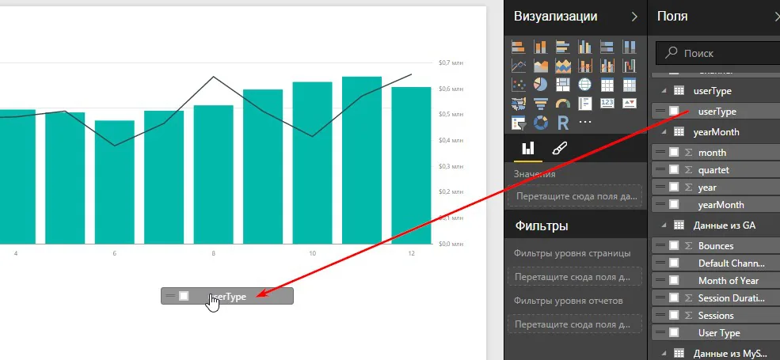
- «yearMonth» из таблицы «yearMonth»; - «Channel» из таблицы «channel» соответственно.6.2. После чего по очереди выделите мышкой каждый из этих объектов и переключите в режим «Срез».
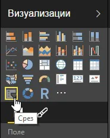
В результате у нас получится лист с возможностью фильтрации данных по типу пользователя, источнику / каналу и месяцу года.
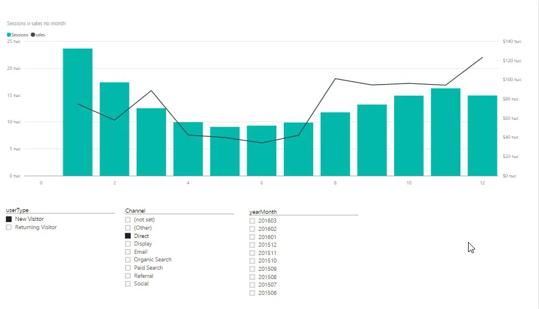
6.3. Если вам понадобится сменить аккаунт Google, к которому привязаны определенные представления Google Analytics, воспользуйтесь меню «Файл» —> «Параметры и настройки» —> «Настройки источника данных».
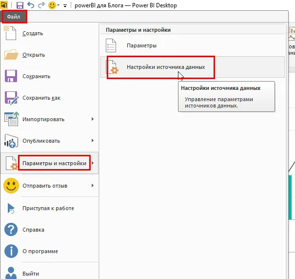
Далее вы можете менять параметры или удалять любой подключенный источник данных.
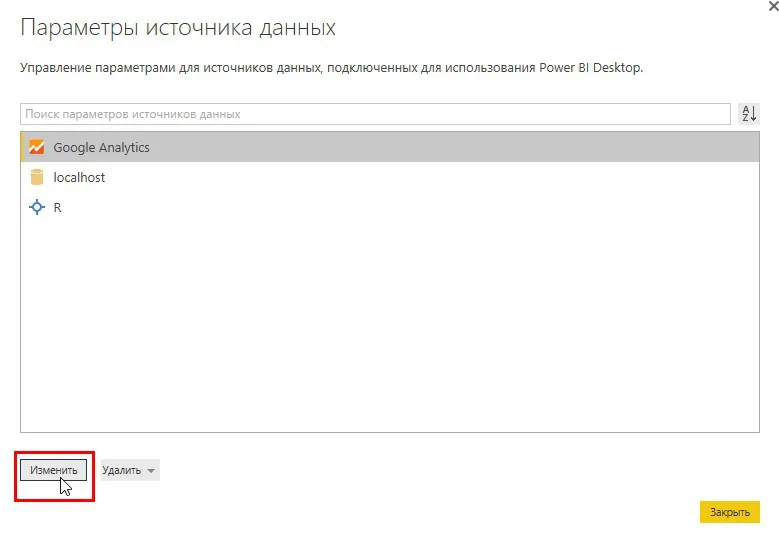
6.4. Поэкспериментируйте с элементами визуализации и выберите наиболее подходящие, (более подробно о правилах выбора диаграммы можно узнать из публикации «Как построить диаграмму и не облажаться»), после чего все диаграммы и таблицы обновляйте нажатием одной кнопки.
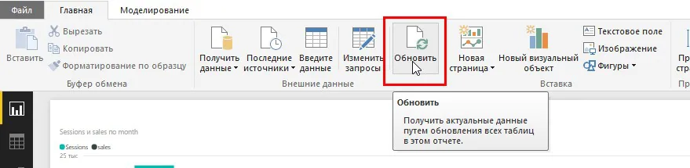
Перейдя по ссылке, вы можете скачать файл, приведенный в данной статье.
Как начать работу с Power BI Service?
Как я уже упоминал в начале статьи, помимо обычной стационарной версии, существует онлайн-сервис Power BI.;Ее функционал не такой обширный, но в целом для онлайн мониторинга основных показателей его вполне достаточно. Откройте Power BI Service перейдя по этой ссылке.
1. Как установить связь Power BI Service с Google Analitycs?
Чтобы открыть рабочую область, нажмите на кнопку с изображением меню. С помощью кнопки «Получение данных» начинаем процесс подключения к Google Analytics.
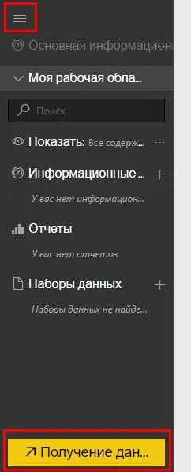
Далее выбираем «Получить данные из веб-служб».
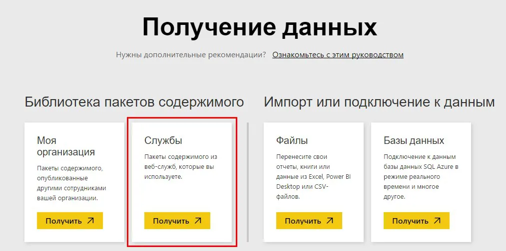
В списке доступных служб находим и выбираем Google Analytics.
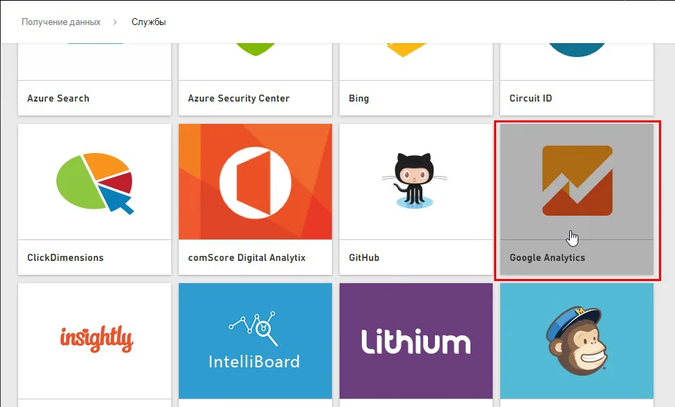
Жмем кнопку «Подключится».
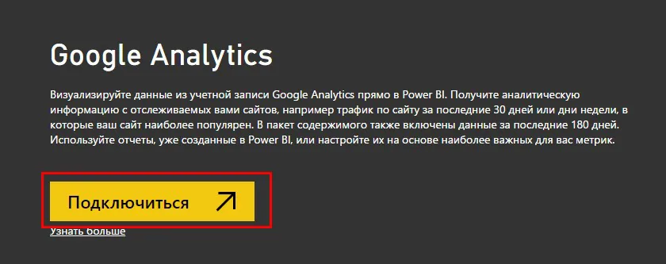
Для Google Analytics на данный момент существует только один способ проверки подлинности «oAuth», поэтому в диалоговом окне проверки подлинности ничего не изменяем и жмем «Войти». 1.2. Выбираем нужный нам Google аккаунт.
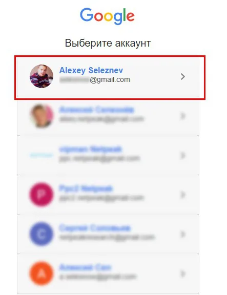
Подтверждаем разрешение Power BI Service на просмотр данных Google Analytics.
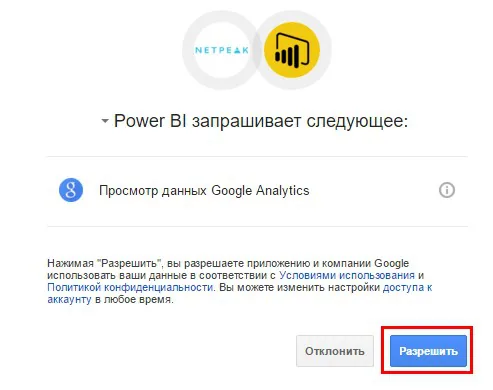
1.3. Следующий шаг — выбор аккаунта, ресурса и представления Google Analytics.
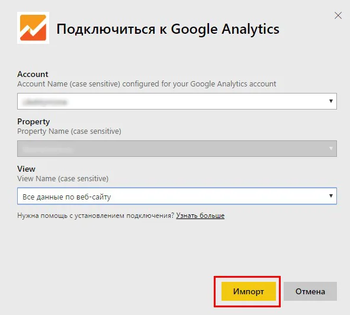
После того, как вы нажмете «Импорт», в рабочей области автоматически будет сформирован набор данных, отчет и информационная панель.
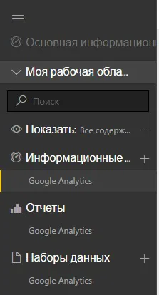
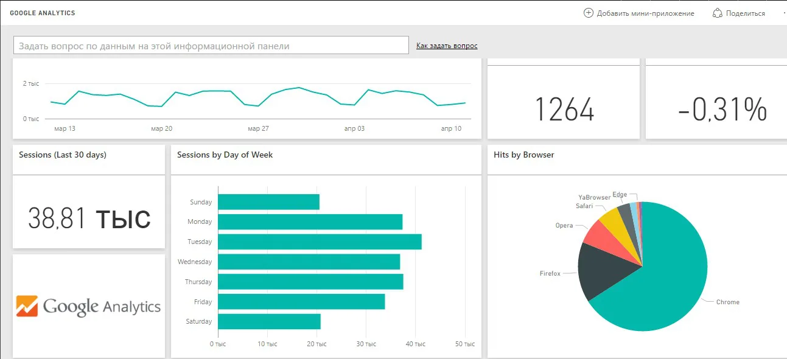
2. Как работать с отчетами?
Также вы можете посмотреть все сформированные автоматически отчеты, для этого кликните в основном меню в области отчетов по пункту «Google Analytics».
2.1. Отчеты сгруппированы по страницам:
- Site trafic;
- System usage;
- Total users;
- Page performance;
- Top pages.
2.1.1. Соответственно страница Site traffic содержит информацию о сеансах и хитах, а также о поведенческих показателях пользователей. 2.1.2. Страница System usage содержит информацию о геолокации, операционной системе и типе устройства пользователей.
2.1.3. На странице Total User вы найдете информацию о количестве посетителей.
2.1.4. На странице Page Performance содержится информация о скорости загрузки страниц.
2.1.5. Последняя страница Top Pages отображает информацию о количестве уникальных просмотров, а также о количестве входов и выходов с сайта в разрезе страниц.
2.2 Можно изменить любой элемент отчета либо добавить новую страницу, для этого достаточно кликнуть по кнопке «Изменить отчет».
В нижней части экрана отобразится кнопка добавления новых страниц в отчет.
2.3. Как вы могли заметить, в онлайн версии Power BI нет возможности выбора параметров и показателей при загрузке данных из Google Analytics, в связи с чем вы можете работать только со стандартным набором полей, который в свою очередь состоит из пяти таблиц: 2.3.1. Calculaions:
- Avg.daily new users — среднедневное количество новых пользователей;
- Avg. daily new users (weekday) — среднедневное количество пользователей в разрезе дней недели;
- Avg. daily users — среднедневное количество пользователей;
- Avg.daily users weekday — среднедневное количество пользователей в разрезе дней недели;
- Avg. session duration (sec) — средняя длительность сеанса в секундах;
- Bounces MoM — прирост количества отказов за последние 30 дней;
- Hits MoM — прирост количества хитов за последние 30 дней;
- New users MoM — прирост новых пользователей за последние 30 дней;
- Session MoM — прирост объема сеансов за последние 30 дней.
2.3.2. Overwiev:
- Avg. session duration — средняя длительность сеанса;
- Bounces — количество отказов;
- Browser — браузер пользователя;
- Country — страна пользователя;
- Date — дата сеанса;
- DayOfMonth — день месяца, когда был совершен сеанс;
- DayOfWeek — день недели, когда был совершен сеанс;
- DaysFromToday — количество дней с сегодняшнего дня;
- Device category — тип устройства;
- Hits — количество хитов;
- MonthName — название месяца;
- MonthYear — месяц года;
- Operating system — операционная система пользователя;
- Page / sessions — среднее количество просмотренных страниц на сеанс;
- Pageviws — общее количество просмотренных страниц;
- Sessions — количество сеансов;
- Year — год.
2.3.3. Page performance:
- Date — дата;
- DayOfMonth — день месяца;
- DayOfWeek — день недели;
- DomainLookupTime — время поиска домена;
- MonthName — название месяца;
- MonthYear — месяц года;
- PageLoadTime — время загрузки страницы;
- RedirectionTime — время редиректа;
- Year — год.
2.3.4. Pages:
- Date — дата;
- DayOfMonth — день месяца;
- DayOfWeek — день недели;
- Entrances — количество заходов;
- Exits — количество выходов;
- MonthName — название месяца;
- MonthYear — месяц года;
- Page — url страницы;
- PageTitle — название страницы;
- Pageviews — количество просмотров страницы;
- TimeOnPage(sec) — общее время, проведенное на странице в секундах;
- Unique pageviews — количество уникальных просмотров страниц;
- Year — год.
2.3.5. User:
- Date — дата;
- DayOfMonth — день месяца;
- DayOfWeek — день недели;
- DaysFromToday — количество дней с сегодняшнего дня;
- MonthName — название месяца;
- MonthYear — месяц года;
- New users — количество новых пользователей;
- Users — количество пользователей;
- Year — год.
Эти пять таблиц, загруженные из Google Analytics, не связаны между собой, так как в онлайн версии Power BI у вас нет возможности создавать связи. Но в Power BI Service можно публиковать файлы, разработанные в Power BI Desktop файлов.
3. Как опубликовать информацию с Power BI Desktop?
Для этого достаточно быть зарегистрированным пользователем данной службы и нажать кнопку «Опубликовать».
После чего начинается процесс публикации файла в службе Power BI.
Если вы все сделали правильно, то получите сообщение, что файл был успешно опубликован, и вы можете запустить автоматический анализ данных. Power BI Service выведет на экран найденные в данных закономерности.
В опубликованном файле при этом будут сохранены все существующие между таблицами связи.
4. Как создавать информационные панели?
4.1. Вы можете создавать новые информационные панели и добавлять на них любой элемент отчета, кликнув по кнопке закрепить.
4.2. Далее вам надо выбрать, где вы хотите закрепить выбранный элемент на уже существующей или новой панели мониторинга.
4.3. Любую созданную вами панель мониторинга можно расшарить с помощью кнопки «Поделиться», которая располагается в правом верхнем углу меню каждой созданной панели мониторинга.
Заключение
Сегодня я рассказал:
- Как загрузить в программу нужный набор данных (я показал как это делать на примере интеграции с Google Analytics или загрузки данных из MySQL).
- Как упорядочить данные, чтобы привести их к нужному для визуализации виду.
- Как построить отчет, где будут отображаться данные из разных источников.
- Как настроить фильтры данных, выбрать подходящие элементы визуализации и опубликовать результат для просмотра в онлайн-версии Power BI.
Power BI — мощный и многофункциональный инструмент, поэтому достаточно тяжело описать весь его функционал в рамках одной статьи. Ответы на базовые вопросы по работе с Power BI можно узнать из официального мануала, который вы можете найти по этой ссылке. На остальные — с радостью отвечу в комментариях.